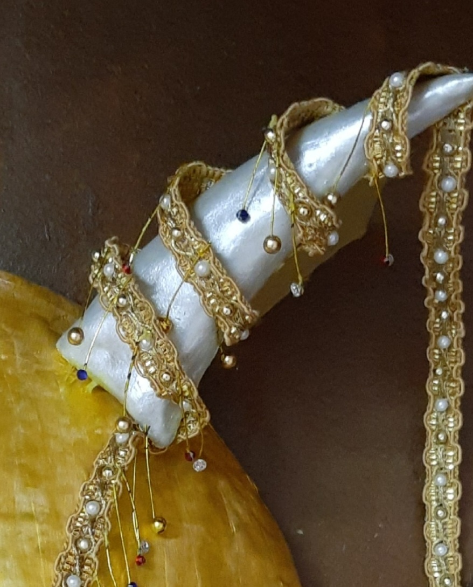
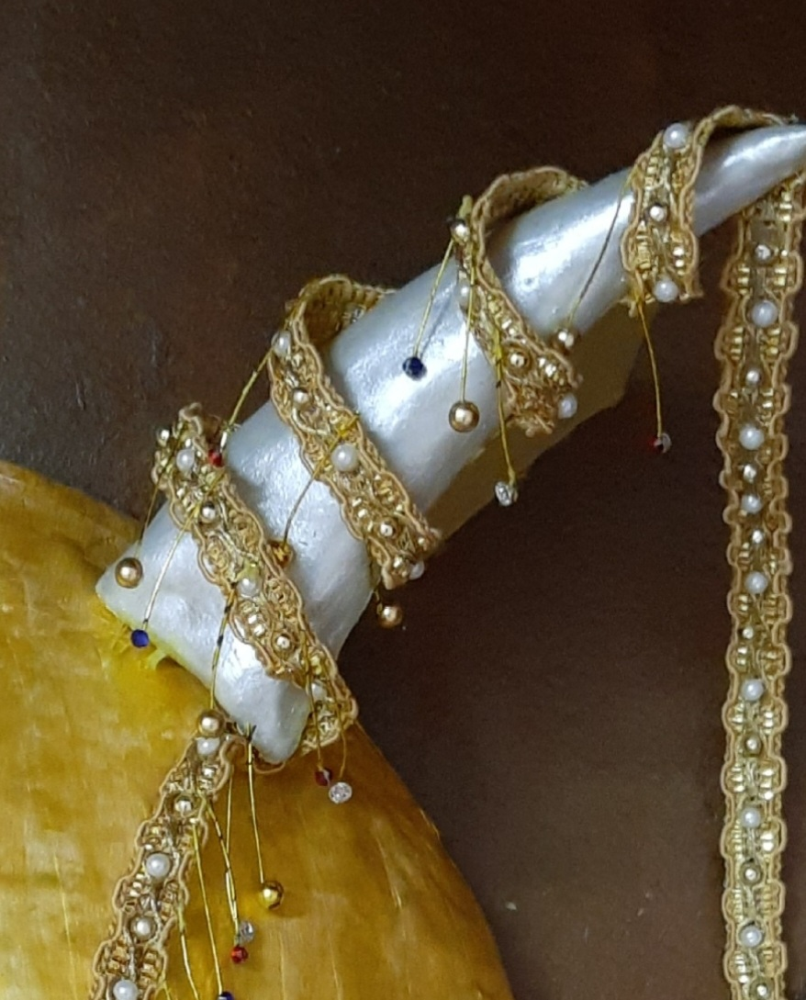
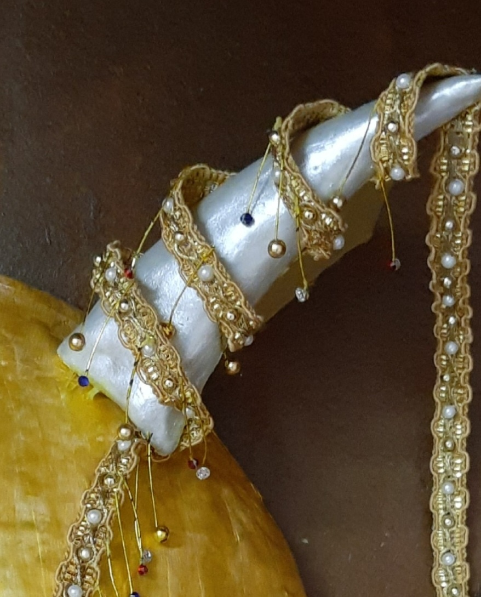

Medium: Paper Mache and Clay
Art type: Mask Design
For this assignment, we had to create a 3D mask with many embellishments that had significance in a made up culture. We also had to explain the story behind the mask and the made up culture that it was a part of.
Steps
Step 1 : Firstly, I created numerous sketches of mask ideas that I had and chose this as my favourite one because I found it the most intriguing. Then I tried making a sample of it out of air drying clay which was much harder than I anticipated and many of the shapes didn't turn out exactly as I wanted. It also started drying too quickly and formed some cracks in the clay. I added an additional acessory on the head since it seemed too empty to me.
Step 2 : Since I clearly couldn't make my actual life size mask from the air drying clay which dried too soon and was hard to mould, I chose to make my mask out of paper mache. I blew a balloon, cut out newspaper into pieces, soaked the pieces in glue and added them to the balloon's surface. After it dried, I painted it beige (since I didn't have white) as a base coat because the gold color was too translucent and having a base coat would mean I would only have to paint one layer of the gold paint. I also made out the accesories in air drying clay and used a fancy string to wrap around the mask.
Step 3 : Then I painted the mask gold and the accessories silver. I cut out gold wire into short pieces and then attached golden beads or silver, red or blue fake gems to them to match my sketch. I then attached them to the eye and the string.

Step 4 : Finally, I felt like the top left side of the head was missing something but I did not want to add the same addition as I did to my clay mask. I had a broken fancy bracelet so I used it and put it there and it tied the whole mask together.
Reflection
Some things that turned out really well were the small hanging decorations in the mask and the ornaments made of air drying clay. Something I can improve next time is add more layers of newspaper in the paper mache mask. I dealt with failure in my small sample which used air drying clay as it was extremely difficult to mould and had several cracks. I dealt with this by choosing a different main medium for my final mask. However, I realised I needed to use air drying clay to make some of the ornaments used to decorate my mask and therefore I continued to experiment with it. While experimenting I realised that adding water to the air drying clay made it easier to mould uniformly without cracks and also increased the time it took to dry and therefore increased the amount of time I could spend moulding it.
.png)


.jpg)
 
